Proprietary to General Electric Company
Direction 5670006, Rev# 1
Discovery MR750w GEM Service Methods
Module Version 15.0, Version Date 10/19/11
Proprietary to General Electric Company |
| Required Persons | Preliminary Reqs | Procedure | Finalization |
|---|---|---|---|
| 1 | 20 mins to 60 mins | 10 mins |
The RFA (Radio Frequency Analysis) Tool is designed to quantitatively measure the performance of the Transmit chain by allowing the FE to perform "loopback" tests from several different points along the chain. At most points, the inter-pulse RF stability and inter-pulse RF fidelity (i.e. magnitude and phase linearity) can be measured.
Go to Setup Test “Setup Test.”
Go to Perform Test “Perform Test.”
For information about the theory behind the tests, see RF Loopback Test Theory.
| Item | Qty | Effectivity | Part# | Manufacturer | |
|---|---|---|---|---|---|
| 3T RF Power Measurement Kit | 1 | - | 5307511-2 | - | |
| Universal SST Kit (1.5T and 3.0T) | 1 | - | 5110731-4 | - | |
| Head Coil | 1 | - | 5180918 | - | |
| 200 Watt 30dB Attenuator (used as the 1.5T Dummy Load, secondary, from 1.5T Tool Kit, Part # 46-317724G1 or 46-317724G2) | 1 | - | 46-317724P14 | - | |
| 6 feet of N-male to N-male RG214 cable (from 1.5T Tool Kit, Part # 46-317724G1 or 46-317724G2) | 1 | - | 46-317724P9 | - | |
| 70dB, with 10dB step, Attenuator (from 3.0T Grafidy Kit, Part # 2386042) | 1 | - | 46-255838P2 | - | |
| BNC M-F Feed thru with DC Blocking Cap (from DVMR Service Cables Kit, Part # 5306523) | 1 | - | 5160682 | - | |
| 27cm Body Sphere | 1 | - | 2359877 | - | |
| Body Loader | 1 | - | 2360037 | - | |
| 17 cm Head Sphere | 1 | - | 2360025 | - | |
| Head Loader | 1 | - | 2360031 | - | |
| Head Loader Positioner | 1 | - | 5110241 | - | |
| Loop Velcro squares (for attaching the RF sense loops; from Universal SST Kit, Part # 5110731) | as needed | - | 46-307152P1 | - | |
| Oscilloscope; Tek TDS3012B (100MHz dual channel, single trigger input scope) | 1 | - | 2284754-2 | - | |
| Standard Tool Kit | 1 | - | - | - | |
| ||||
| Ferrous Tools! | ||||
| The magnet attracts dummy loads which contain ferrous material. | ||||
| Place dummy loads as far away from the magnet as possible. |
| ||||
| Ferrous Tools! | ||||
| The magnet can damage the oscilloscope. | ||||
| Keep the oscilloscope outside the magnet room. |
Ensure that the system is idle and remove all portable coils from the bore.
On the Driver Module in the Penetration (Pen) cabinet, set Switch 2 (SW2) to TR DISABLE .
Illustration 1: Setting TR Disable
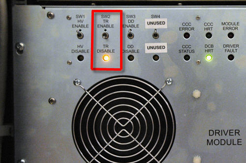
On the Exciter/Ref Clock module located in the Pen cabinet, set the RF Enb switch down (Disable).
Illustration 2: Exciter/Ref Clock Module
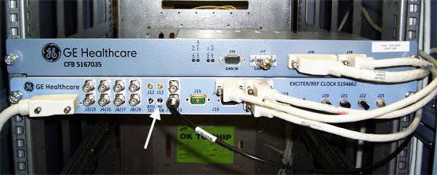
Table 1 provides links to the setup diagrams for the loopback test for the various components. Locate the setup diagram that matches your system and the loopback test that you want to perform. Set up the components to match the setup diagram.
Table 1: Reference Diagrams for Loopback Tests
| For this loopback test: | On this type of system: | Refer to this setup diagram: | ||
Exciter
| MR750 (3.0T) | |||
| MR750w (3.0T) | ||||
| MR450 (1.5T) | ||||
| MR450w (1.5T) | ||||
Headdummy
| MR750 (3.0T) | |||
| MR750w (3.0T) | ||||
| MR450 (1.5T) | ||||
| MR450w (1.5T) | ||||
Bodydummy
| MR750 (3.0T) | |||
| MR750w (3.0T) | ||||
| MR450 (1.5T) | ||||
| MR450w (1.5T) | ||||
Headsense
| MR750 (3.0T) | |||
| MR750w (3.0T) | ||||
| MR450 (1.5T) | ||||
| MR450w (1.5T) | ||||
Bodysense
| MR750 (3.0T) | |||
| MR750w (3.0T) | ||||
| MR450 (1.5T) | ||||
| MR450w (1.5T) |
| NOTE: | For MR 750w, the loopback test setup for headsense and bodysense are the same. |
Set the 1dB/step and 10db/step rotary attenuators to 4db and 40db, respectively (decibel (dB) ).
On the Exciter/Ref Clock module located in the Pen cabinet, set the RF Enb switch to Enable (up).
If you are running the Exciter, Headdummy, or Bodydummy loopback tests, go to Step 9 and do not configure the oscilloscope.
If you are running a headsense or bodysense test, set up the oscilloscope:
Obtain a Tektronix TDS 3012B, 2-channel, 100MHz, color Digital Phosphor Oscilloscope. The front panel of the scope is organized into VERTICAL, HORIZONTAL, TRIGGER, and ACQUIRE groups of controls. These four names are used below to help locate the various controls:
Illustration 3: Four O-Scope Control Groups

Plug the scope into an available Power/Gradient/RF (PGR) cabinet service outlet outside the magnet room and turn the scope power ON.
Use a BNC cable to connect the RTO output J3 on the front panel of the Exciter to the channel 1 (see Illustration 4) input of the scope. Set the RTO select switch of the exciter to its Rho position (the lowest OR right most position depending on switch mount orientation.)
Illustration 4: Scope Channel Locations

Take the BNC cable at the end of the loopback path setup for headsense or bodysense modes and connect it to the channel 2 input of the scope (see Illustration 4).
Use a BNC cable to connect the “in view” signal output J5 on the front panel of the Exciter to the EXT TRIG input of the scope (see Illustration 4). This signal indicates when data is collected during each TR interval of the Manual Pre-Scan entry point and is used to trigger the scope.
On the Exciter module in the Pen Cabinet, set the RF Enb switch up (Enable), (or reconnect J14 on the RF amp front).
Landmark as indicated in the reference diagram for the test you are running (see Table 1), and Move to Scan.
Select RFA Tool in the service browser (see Illustration 5).
Illustration 5: RFA Tool
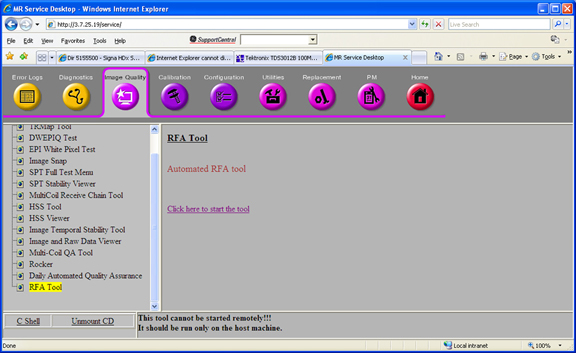
Illustration 6: RF Analysis Screen

Select Loopback Mode for the present setup (see Step ).
| NOTE: | If selecting Loopback mode of Exicter or bodydummy, there are two
outputs: Channel 1 and Channel 2. Select the applicable channel in
the Dual Drive Output section of RFA. Only one channel can be monitored
at a time. There is the option of executing RFA with output on both
channels or only one channel. This may aid in troubleshooting stability
issues. To enable the channel that is not being tested, select Leave Ch1 or 2 exciter output enabled in the Dual Drive Output section of RFA. To disable the channel
that is not being used, select Disable Ch 1 or
2 exciter output in the Dual Drive Output section
of RFA. IMPORTANT: If running bodydummy mode of RFA and both Channel 1 and Channel 2 are being used, two dummy loads are required. the dummy load for the channel being monitored will require the 3.0T RF Power Measurement Kit. The standard 1.5T dummy load can be used for the channel that is not being monitored, as the RF output is 15Kw per channel. Damage to the RF Amplifier can occur if running RFA with both channels active and not using two dummy loads. |
Select RF Pulse Type (initially use default).
Select Gradient State (use the default).
| ||||
| Avoid Equipment Damage. | ||||
| Avoid damage the DTRSW and the preamp combiner. | ||||
| Ensure that the TR bias cable is properly connected to the RF amplifier (J10). |
Click [Start].
If the selected loopback mode is either headsense OR bodysense, follow the instructions in Monitoring the Loopback Signal Using an Oscilloscope to examine the loopback signal.
| NOTE: | SVAT errors usually indicate a setup problem such as Landmark, 32-channel patient table connector not connected, TR or DD fault, etc. Check the error log. |
Check the loopback setup according to the pop-up request, then click [Continue].
| NOTE: | During headsense or bodysense tests, do not click [OK] on the sense loop popup until you are ready to end the test. |
A message box appears as shown in Illustration 8. (The message box appears after 60 seconds.) Click the Patient icon on upper right corner of the display as shown in Illustration 7.
Illustration 7: Patient Icon
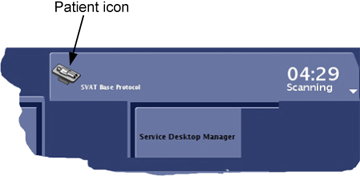
Illustration 8: Message Box

Slowly increase TG to 200 while adjusting the rotary attenuators (to prevent receiver over-range indicated by R1%>100 or R2% >100) until you achieve an R1% and R2% display on the manual prescan page of 84-94% with TG=200.
When done, use Toolbelt icon to return to service window and start scan by selecting [Proceed & auto-scan]. See Illustration 8.
After the scan and analysis ends, view the results. Compare the results to the typical normal plots shown in RFA Plot Results. Real failures will exceed the example plot values by 2 or more times. Minor differences are not failures. Select the pop-up choice to erase the displays. The plots are saved as .jpg files under /usr/g/service/cclass/RFA/.
If you want to perform another test in the same Loopback Mode, then go to Step 3.
If you want to perform another test in a different Loopback Mode, then go to Step 2.
This procedure applies only if running in headsense OR bodysense Loopback mode. When this procedure is completed, go to Perform Test, Step 9.
| NOTE: | If selecting Loopback mode of bodysense, there are three outputs: Ch 1 output only looped back, Ch2 output only looped back, and Dual Drive output looped back. Select the applicable channel in the Dual Drive Output section of RFA. There is the option of executing RFA with output on both channels or only one channel. This may aid in troubleshooting stability issues. To enable the channel that is not being tested, select Leave Ch1 or 2 exciter output enabled in the dual Drive Output section of RFA. To disable the channel that is not being used, select Disable Ch 1 or 2 exciter output] in the Dual Drive Output section of RFA. |
Press the black Autoset button under ACQUIRE control.
Press the gray MENU button under the VERTICAL controls.
Illustration 9: O-Scope Vertical Menu
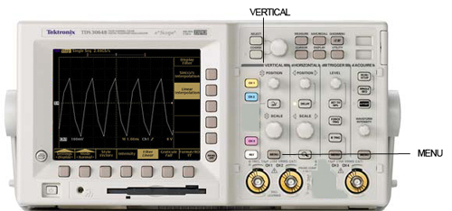
Press the yellow CH1 button under VERTICAL controls.
Illustration 10: Vertical Controls with CH 1

Press the Coupling button on the bottom of the display:
Select GND on the right of display.
Select 1 MegOhm on the right of the display. Important!
Use the VERTICAL/SCALE knob to set to 100mV/div. (See Illustration 10.)
Use the VERTICAL/POSITION knob to vertically center the yellow plot on the horizontal center line of the screen at 0 volts. (See Illustration 10.)
Select DC on the right of the display.
Press Invert on the bottom of the display.
Select Invert Off on the right of the display.
Press Bandwidth on the bottom of the display.
Select Full Bandwidth on the right of the display.
Press the blue CH2 button under the VERTICAL controls.
Illustration 11: Vertical Controls with CH 2

Press the Coupling button on the bottom of the display.
Select GND on the right of the display.
Select 1 MegOhm on the right of the display (very important)!
Use the VERTICAL/SCALE knob to set to 100mV/div. (See Illustration 11.)
Use the VERTICAL/POSITION knob to vertically center the blue plot on the horizontal center line of the screen at 0 volts. (See Illustration 11.)
Select DC on the right of the display.
Press the Invert button on the bottom of the display. Select Invert Off on the right of the display.
Press the Bandwidth button on the bottom of the display. Select Full Bandwidth on the right of the display.
Press the MENU button under the TRIGGER controls.
Illustration 12: Trigger Controls

Press the Type button on the bottom of the display to select Edge.
Press the Source button on the bottom of the display. Under A Trigger Source on the right of the display select Ext (external).
Press the Coupling button on the bottom of the display. Under A Trigger Coupling on the right of the display select DC.
Press the Slope button on the bottom of the display. Under A Trigger Slope select the positive going slope.
Press the Level button on the bottom of the display. Under A Trigger Level select the positive slope level. Use the small TRIGGER/LEVEL knob to set the level to 300mv (the value is displayed on the screen. (See Illustration 12.)
If a small green light to the left of the DELAY button under the HORIZONTAL controls is lit, then press the DELAY button to shut it off.
Illustration 13: Horizontal Controls

Adjust the HORIZONTAL/POSITION knob so that the red T value at the bottom of the display reads 0%. At this point the small red T at the top of the display should be all the way to the left side of the display time line. (See Illustration 13.)
Adjust the HORIZONTAL/SCALE knob to set 800μs/div (the value is shown after the M at the bottom of the display). (See Illustration 13.)
Press the blue CH2 button under the VERTICAL controls. Adjust VERTICAL/SCALE knob to expand the blue RF pulse to the maximum vertical height without going outside the display. (See Illustration 13.)
Press the yellow CH1 button, then press the gray MENU button under VERTICAL controls. Adjust VERTICAL/SCALE knob to expand the yellow envelope pulse to the maximum vertical height without going outside the display. (See Illustration 11.)
Select Fine Scale on the bottom of the display. Use the large unmarked multipurpose knob at the top of the scope to adjust the fine scale amplitude of the yellow envelope pulse until it is coincident with the envelope of the blue RF pulse.
Increase TG to 200.
This is a visual test only. The two waveforms should be similar.
The following sample plot results are Inter-pulse Stability (created in Standard Test mode only)
| NOTE: | There are no specifications for RFA at this time. However, if troubleshooting Body Transmit issues, both Channel 1 and Channel 2 should have similar results. There should also be similar results when running RFA on Channel 1, with Channel 2 active or not active. |
PkMag
This plot’s title indicates it’s an RFA tool result (from raw data file /usr/g/mrraw/P04608.7.RFA.exciter) from an exciter loopback test performed with R1=11, R2=12, TG=200, showing RF pulse PkMag results ordered in time.
The “PkMag” means that for each RF pulse we are plotting a point representative of its peak time domain magnitude measured during its play out. This RFA acquisition collected 15 slices worth of RF2 pulses. That is, 15 echo trains per TR period, each train 8 echoes in length, for 32 TR periods or shots (i.e. “ymatrixSize/teal” = 256/8 = 32 shots) for a total of 15x8x32=3840 RF pulses (total plot points).
All data from the 1st echo train slot in each TR period is shown in a “pure” blue plot with all 256 points acquired for that slot (one per RF pulse) shown in time order from left to right (i.e. indices 1 to 256=ymatrixSize on the horizontal axis). All data from the 2nd through 14th echo train slots in each TR period is shown in separate overlaid plots that gradually change in color from blue to purple to red. All data from the last (i.e. 15th) echo train slot in each TR period is shown in a “pure” red plot overlaid on all previous plots.
The ideal “no problems” result would appear as a single red horizontal line at a vertical axis value of 100, meaning that every RF2 pulse played for every slice had EXACTLY the same Peak Magnitude and all these values scaled to 100.0 when the entire data set was normalized to “percent of peak value”. This display format allows visual assessment/separation of instabilities that are tied to echo train, to “shot” (TR period), to “slice time slot” or to the entire scan’s acquisition. Be aware that the plots are auto-scaled.
Illustration 14: PkMag, or Peak Magnitude (Exciter)

Illustration 15: PkMag (Body Dummy)

Illustration 16: PkMag (Head Dummy)
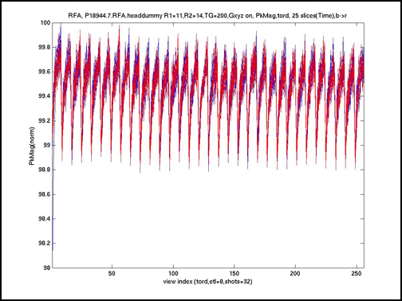
Integ
This is analogous to the earlier PkMag plot description, however this plot represents the RF Pulse INTEGRAL (or area) for each RF pulse acquired.
Illustration 17: Integ, or Integral (Exciter)
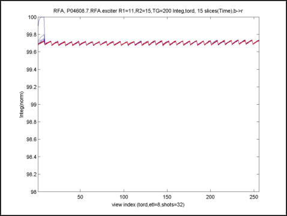
Illustration 18: Integ (Bodydummy)
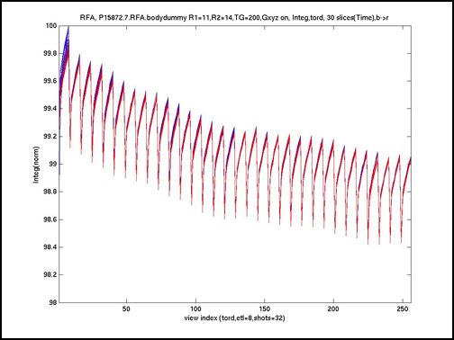
Illustration 19: Integ (Headdummy)
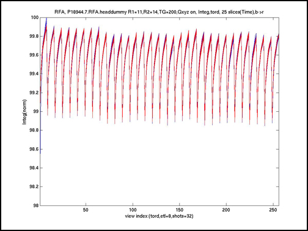
0-order Phase
This is analogous to the earlier PkMag plot description, however this plot represents the RF Pulse’s “0-order” Phase (AVERAGE PHASE) in degrees for each RF pulse acquired.
Illustration 20: 0-order Phase (Exciter)
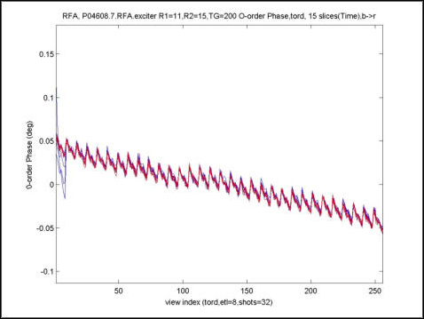
Illustration 21: 0-order Phase (Bodydummy)
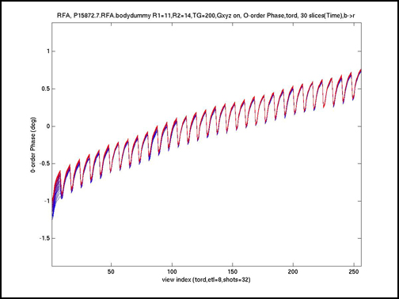
Illustration 22: 0-order Phase (Headdummy)
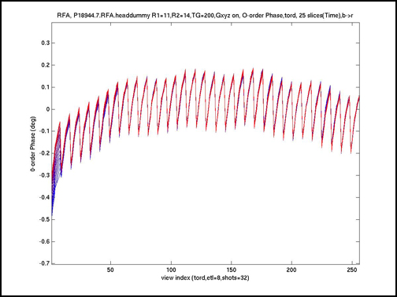
1-order Phase
This is analogous to the earlier PkMag plot description, however this plot represents the RF Pulse’s “1-order phase” (LINEAR PHASE) in degrees/point for each RF pulse acquired.
Illustration 23: 1-order Pulse (Exciter)
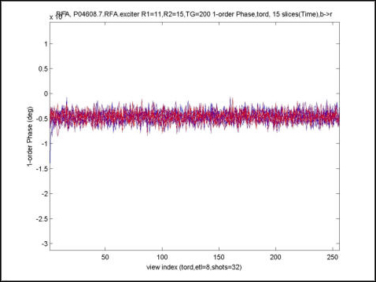
Illustration 24: 1-order Pulse (Bodydummy)
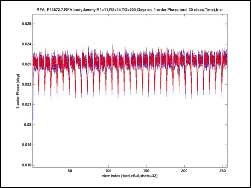
Illustration 25: 1-order Pulse (Headdummy)
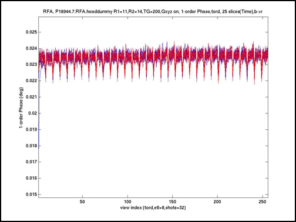
The following sample plot results are Intra-pulse Fidelity (created in Exp(onential) Test mode).
Magfit
Plot title: none; mag & fit vs sample index; Ideal: Perfect exponential of blue points with overlaid red exponential curve fit.
Plot title: none; mag err(%) vs sample index; Ideal: Flat horizontal blue line of processed points with overlaid flat red curve fit, both at mag err(%) = 0.0 %.
Plot title: none; mag err(dB) vs sample index; Ideal: Flat horizontal blue line of processed points with overlaid flat red curve fit, both at mag err(dB) = 0.0 dB.
Illustration 26: Magfit, or Intra-pulse amp lin (All)

Magdif
Plot title: Mag linearity err(%) ; mag err(%) vs dB; Ideal: Flat horizontal blue line of processed points with overlaid flat red curve fit, both at mag err(%) = 0.0 deg.
Plot title: Mag linearity err(dB); mag err(db) vs dB; Ideal: Flat horizontal blue line of processed points with overlaid flat red curve fit, both at mag err(dB) = 0.0 dB.
Plot title: Mag linearity err DIF(dB/dB); mag err DIF(dB/dB) vs dB; Ideal: Flat horizontal blue line of processed points with at mag err(dB) = 0.0 dB.
Illustration 27: Magdif (All)
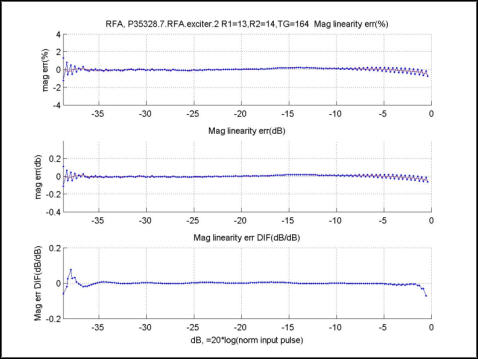
Phafit
Plot title: none; Phase(deg) vs sample index;Ideal: One horizontal red line at any phase(deg) value.
Plot title: none; Phase(deg,blue) vs sample index; Ideal: One horizontal red line at same phase(deg) value as previous ideal plot.
Plot title: none; Phase err(deg,blue) & fit(red) vs sample index; Ideal: One horizontal red line at 0.0.
Illustration 28: Phafit (All)
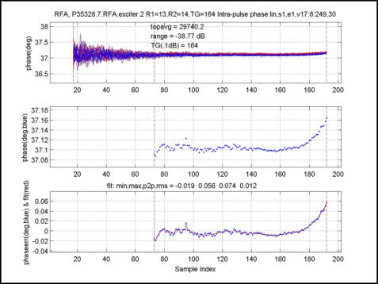
Phadif
Plot title: Phase linearity err(deg); Phase err(deg) vs dB; Ideal: One horizontal red line at 0.0
Plot title: Phase linearity err DIF(deg/dB); Phase err DIF(deg/dB) vs d; Ideal: One horizontal red line at 0.0
Illustration 29: Phadif (All)
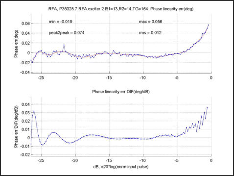
On the Exciter/Ref Clock module located in the Pen cabinet, set the RF Enb switch to Disable (down).
When finished with the loopback test, restore the cabling to the default clinical state.
Table 2: Reference Diagrams for Default State
| For this type of system: | Refer to this setup diagram: |
| MR750 (3.0T) | |
| MR750w (3.0T) | |
| MR450 (1.5T) | |
| MR450w (1.5T) |
On the Exciter/Ref Clock module located in the Pen cabinet, set the RF Enb switch to Enable (up).
On the Driver Module in the RF System cabinet, switch the TR Drive switch (SW2) to TR ENABLE.
Perform a quick scan to verify the system is operating properly.